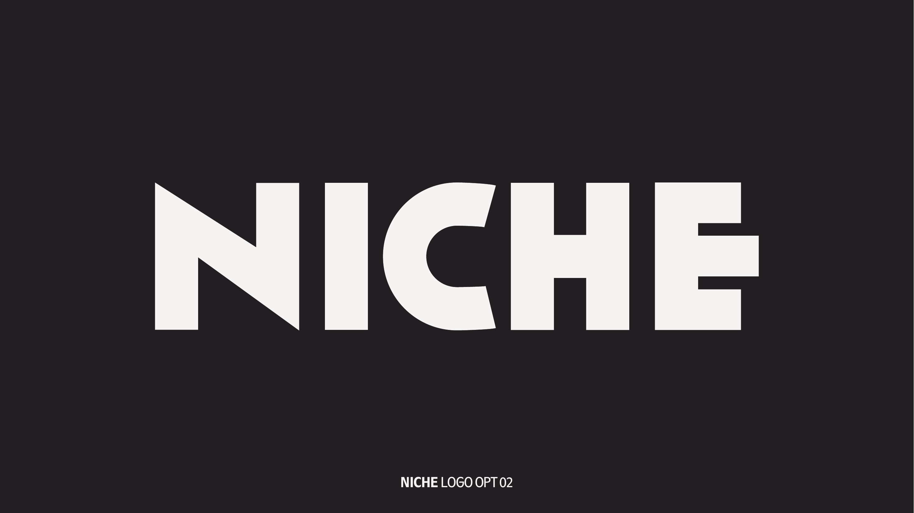

Primary Wordmark
OPT 02 — Institutional backbone.
Bold rounded humanist sans with a tilted N. The tilt is a genuine mnemonic — it makes NICHE recognizable at a glance and creates a natural motion behavior. The asymmetric C differentiates it from any font in current circulation. This wordmark represents NICHE in all institutional contexts.


Both light and dark colorways are approved. Match the background, never approximate.
Wordmark form
All-caps custom drawn wordmark — not a typeface
Distinctive features
Tilted N · Asymmetric open C · Rounded stroke terminals
Register
Confident · editorial · magazine-cover · approachable
On dark (approved)
#f2f1f0 on #252026
On light (approved)
#252026 on #f2f1f0
On red (approved)
#f2f1f0 on #fe1d25 — high-impact only (billboard, cover)
Motion behavior
N tilts from 0° to final angle during logo reveal — 0–400ms